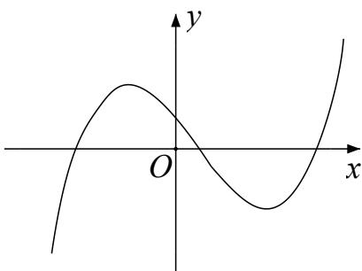
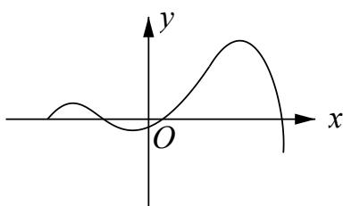
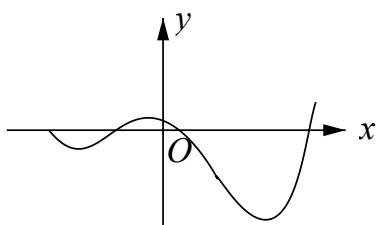
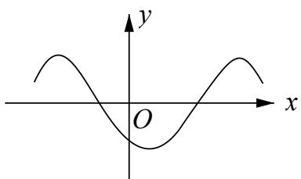
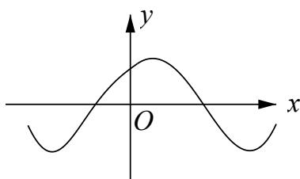

深圳中学 2024 级高二数学周测（3）
一、选择题：本题共8小题，每小题5分，共40分.在每小题给出的四个选项中，只有一个选项是正确的.
1. 已知函数 \(f(x) = (2x + 1)\mathrm{e}^x, f'(x)\) 为 \(f(x)\) 的导函数，则 \(f'(0)\) 的值为
A. 1
B. 2
C. 3
D. 4
2. 函数 \(y = f(x)\) 的导函数 \(y = f'(x)\) 的图像如图所示，则函数 \(y = f(x)\) 的图象可能是

A.

B.

C.

D.

3. 曲线 \(y = 2\sin x + \cos x\) 在点 \((\pi, -1)\) 处的切线方程为
A. \(x - y - \pi - 1 = 0\)
B. \(2x - y - 2\pi - 1 = 0\)
C. \(2x + y - 2\pi + 1 = 0\)
D. \(x + y - \pi + 1 = 0\)
4. 设 \(f(x) = x - \sin x\) ，则 \(f(x) =\)
A. 既是奇函数又是减函数
B. 既是奇函数又是增函数
C. 是有零点的减函数
D. 是没有零点的奇函数
5. 设函数 \(f'(x)\) 是奇函数 \(f(x) (x \in \mathbf{R})\) 的导函数， \(f(-1) = 0\) ，当 \(x > 0\) 时， \(xf'(x) - f(x) < 0\) ，则使得 \(f(x) > 0\) 成立的 \(x\) 的取值范围是
A. \((-\infty, -1)\mathrm{U}(0,1)\)
B. \((-1,0)\mathrm{U}(1,+\infty)\)
C. \((-\infty,-1)\mathrm{U}(-1,0)\)
D. \((0,1)\mathrm{U}(1,+\infty)\)
6. 若 \(a > 0, b > 0\) ，且函数 \(f(x) = 4x^{3} - ax^{2} - 2bx + 2\) 在 \(x = 1\) 处有极值，则 \(ab\) 的最大值等于
A. 2
B. 3
C. 6
D. 9
7. 已知函数 \(f(x) = ae^x - \ln x\) 在区间(1,2)上单调递增，则 \(a\) 的最小值为
A. \(e^2\)
B. \(e\)
C. \(e^{-1}\)
D. \(e^{-2}\)
8. 已知 \(a \in \mathbf{R}\) ，设函数 \(f(x) = \begin{cases} x^2 - 2ax + 2a, & x,, 1, \\ x - a\ln x, & x > 1, \end{cases}\) 若关于 \(x\) 的不等式 \(f(x)\) .0 在 \(\mathbf{R}\) 上恒成立，则 \(a\) 的取值范围为
A. [0,1]
B. [0,2]
C. [0,e]
D. [1,e]
二、多选题：本题共3小题，每小题6分，共18分.在每小题给出的四个选项中，有多项符合题目要求.全部选对的得6分，部分选对的得部分分，选对但不全的得部分分，有选错的得0分.
9. 设函数 \(f(x)\) 的定义域为 \(\mathbf{R}\) ， \(x_0(x_0 \neq 0)\) 是 \(f(x)\) 的极大值点，以下结论一定正确的是
A. \(\forall x \in \mathbf{R}, f(x) \leq f(x_0)\)
B. \(-x_0\) 是 \(f(-x)\) 的极大值点 C. \(-x_0\) 是 \(-f(x)\) 的极小值点 D. \(-x_0\) 是 \(-f(-x)\) 的极小值点
10. 已知函数 \(f(x) = 2^x\) ， \(g(x) = x^2 + ax\) （其中 \(a \in R\) ）。对于不相等的实数 \(x_1, x_2\) ，设 \(m = \frac{f(x_1) - f(x_2)}{x_1 - x_2}\) ， \(n = \frac{g(x_1) - g(x_2)}{x_1 - x_2}\) ，则
A. 对于任意不相等的实数 \(x_1, x_2\) ，都有 \(m > 0\)
B. 对于任意的 \(a\) 及任意不相等的实数 \(x_1, x_2\) ，都有 \(n > 0\)
C. 对于任意的 \(a\) ，存在不相等的实数 \(x_1, x_2\) ，使得 \(m = n\)
D. 对于任意的 \(a\) ，存在不相等的实数 \(x_1, x_2\) ，使得 \(m = -n\)
11. 设函数 \(f(x) = 2x^{3} - 3ax^{2} + 1\) ，则
A. 当 \(a > 1\) 时， \(f(x)\) 有三个零点 B. 当 \(a < 0\) 时， \(x = 0\) 是 \(f(x)\) 的极大值点 C. 存在 \(a, b\) ，使得 \(x = b\) 为曲线 \(y = f(x)\) 的对称轴 D. 存在 \(a\) ，使得点 \((1, f(1))\) 为曲线 \(y = f(x)\) 的对称中心
三、填空题：3 小题，每小题 5 分，共 15 分.
12. 曲线 \(y = \ln |x|\) 过坐标原点的两条切线的方程为 ____，____。
13. 若函数 \(f(x) = 2x^{3} - ax^{2} + 1 (a \in R)\) 在 \((0, +\infty)\) 内有且只有一个零点，则 \(f(x)\) 在 \([-1, 1]\) 上的最大值与最小值的和为 ____.
14. 设函数 \(f(x) = e^{x}(2x - 1) - ax + a\) ，其中 \(a < 1\) ，若存在唯一的整数 \(x_{0}\) ，使得 \(f(x_{0}) < 0\) ，则 \(a\) 的取值范围是 ____.
答题卡
班级____ 姓名____ 分数
| 选择题 | 多选题 | |||||||||
| 1 | 2 | 3 | 4 | 5 | 6 | 7 | 8 | 9 | 10 | 11 |
12. ____ 13. ____ 14. ____
四、解答题：本题共2小题，共27分. 解答应写出必要的文字说明、证明过程或演算步骤.
15. 设函数 \(f(x)=[ax^{2}-(4a+1)x+4a+3]e^{x}\) .
(1)若曲线 \(y = f(x)\) 在点 \((1, f(1))\) 处的切线与 x 轴平行，求 a；
(2)若 \(f(x)\) 在 x=2 处取得极小值，求 a 的取值范围.
16. 已知函数 \(f(x) = \frac{1}{x} - x + a\ln x\) .
(1)讨论 \(f(x)\) 的单调性;
(2)若 \(f(x)\) 存在两个极值点 \(x_{1}, x_{2}\) ，证明： \(\frac{f(x_1) - f(x_2)}{x_1 - x_2} < a - 2\) .